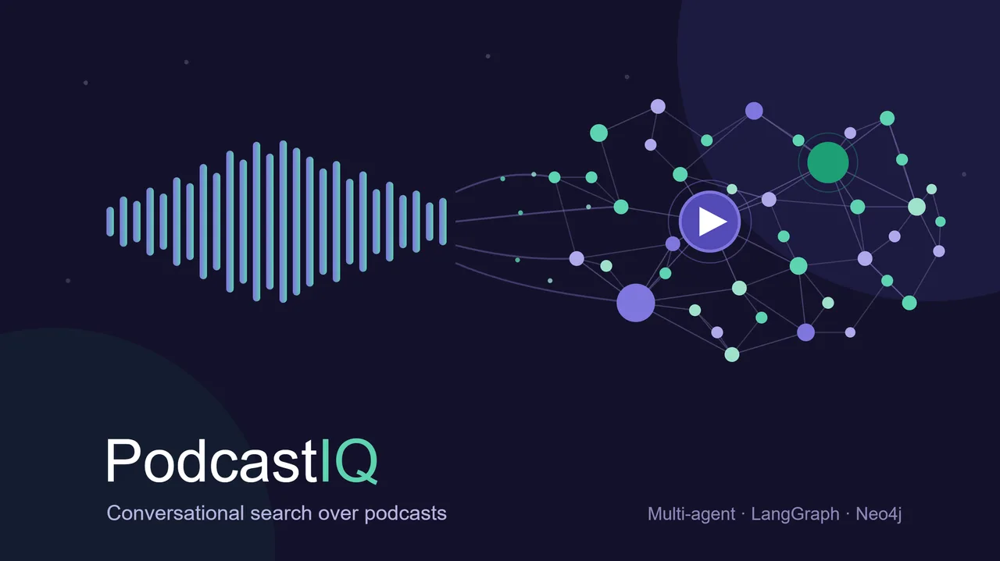

AI & Agentic Systems
PodcastIQ
Making podcast audio as searchable and verifiable as text on the web: a 9-agent system over a Snowflake warehouse and a Neo4j knowledge graph, with temporal claim tracking and hybrid fact-checking.

The problem
You cannot Ctrl+F a two-hour conversation.
Over 5 million podcasts exist with thousands of hours of valuable content, but audio is fundamentally unsearchable. Finding one specific discussion means listening to whole episodes. Expert predictions and claims are made with no accountability over time, and there is no way to compare how different people discuss the same topic.
The users who feel this most are engineers, researchers, and students who need a specific answer, with a source, not three hours of airtime.
Target users, personas & jobs-to-be-done
Three people, one unmet job.
I anchored the product on three primary users. They look different on the surface, but underneath they share one job: get a trusted, sourced answer out of hours of audio without doing the listening themselves. I wrote each as a job-to-be-done so a feature could be judged on whether it actually moved the job forward.
The Engineer
Builds, and needs a precise answer with a timestamp, not a vibe. Wants to find the exact moment a framework was discussed and jump to the clip.JTBD: When I need to know what an expert said about a specific topic, give me the exact passage and a link to hear it, so I can act without scrubbing the episode.
The Researcher
Tracks how expert thinking moves over time and cares whether bold claims hold up against the open web.JTBD: When I study a topic, show me how opinion evolved across years and fact-check the strong claims, with sources on both ends.
The Student
Learning efficiently, wants the gist of an episode without the full runtime, then a next thing to watch.JTBD: When I am short on time, summarize the key points and recommend what to watch next, with citations I can trust.
Current user journey
What finding an answer costs today.
Before PodcastIQ, the path from a question to a sourced answer runs through a chain of workarounds, each one leaking time and trust. I mapped it to find where the job actually breaks.
1 · Search the web
A keyword search surfaces an article that mentions a podcast, or a thread that paraphrases it, but rarely the source itself.
2 · Find the episode
Track down which of dozens of episodes the quote came from, often guessing from a title or a guest name.
3 · Scrub the audio
Open a two-to-three hour episode and scrub a timeline, or skim an auto-transcript with no semantic structure, hunting for the moment.
4 · Trust, or do not
Even once found, there is no easy way to check whether the claim held up, or how the same speaker framed it a year later.
The job breaks at every step: the answer is unsourced, the search is manual, the verification is impossible. PodcastIQ collapses all four into a single typed question.
Competitive & market analysis
Where existing tools stop.
Three classes of tool already touch this space. Each solves one slice of the job and leaves the rest open. I am framing this as my own reasoning about category gaps, not as a benchmarked head-to-head, the matrix maps which jobs each class structurally supports.
| Capability | Podcast directories (e.g. Listen Notes) | Transcript / keyword search | Generic AI chatbots | PodcastIQ |
|---|---|---|---|---|
| Find episodes by topic | Yes | Yes | No | Yes |
| Semantic answer to a question | No | Keyword only | Yes | Yes |
| Cited, deep-linked source | No | Partial | Rarely | Every claim |
| Track how a view changed over time | No | No | No | Temporal graph |
| Fact-check a claim against the web | No | No | Unreliable | Hybrid 3-stage |
| Compare two speakers on a topic | No | No | Weak | Compare agent |
Directories help you find a show but never answer a question. Transcript search matches words, not meaning, and it cannot tell you whether a claim is true. Generic chatbots will answer confidently but cannot cite a timestamp or prove they did not invent it. The open lane is the intersection: a semantic, cited, time-aware, verifiable answer.
Vision, strategy & positioning
The bet: trust is the moat.
Product vision
Make spoken-word content as searchable, comparable, and verifiable as text on the web, so that an expert conversation becomes a queryable source you can act on, not an archive you have to sit through.
My strategy follows from one observation in the competitive map: every nearby tool can answer, but none can be trusted. So I bet the product on trust rather than coverage. Three positioning choices fall out of that bet:
Verifiability over fluency
A confident wrong answer is the failure mode of this whole category. Every claim deep-links to the exact timestamp and, when contested, to web evidence. The receipt is the product.
Time as a first-class dimension
Competitors treat a podcast as a flat document. The temporal knowledge graph treats it as a record that evolves, which is the one capability no other tool in the map offers.
Depth over breadth, for now
Rather than index everything shallowly, I went deep on a curated, time-stratified corpus so the temporal and comparison features actually have signal to work with.
Positioning statement: for engineers, researchers, and students who need a trusted answer out of long-form audio, PodcastIQ is an agentic podcast intelligence platform that returns cited, time-aware, fact-checked answers in seconds, unlike transcript search or generic chatbots, which can match words or sound fluent but cannot prove what they say.
Value proposition
One sentence, three promises.
Ask any question across hundreds of podcasts and get a short, cited answer in seconds, see how the experts' views changed over time, and know which claims actually hold up, without listening to a single full episode.
Save the hours
Hundreds of hours of audio collapse into a typed question and a few seconds of wait. The runtime stops being the price of admission.
Trust the answer
Every claim carries a deep link to its exact source moment, and contested claims are checked against the open web. You can verify, not just read.
See the change
The temporal layer surfaces how a view escalated, softened, or got contradicted across years, an insight you would not know to ask for.
Goal & success metrics
Get to a trusted, sourced answer in seconds.
North Star metric · TTTA
Time-to-Trusted-Answer (TTTA), the median time for a user to go from a question to a correct, cited answer they can act on without re-listening to the episode. It is the one number that captures the whole bet: retrieval that is fast, generation that is faithful, and a source on every claim.
One headline metric is not enough for an AI product, so TTTA sits on top of a layered metric tree: input KPIs that drive it, counter-metrics that keep it honest, and qualitative signals a dashboard cannot capture.
Primary · quantitative
- 95.8% router intent accuracy (48-query test set)
- ~3.5s end-to-end p95 latency (target < 5s)
- 0.774 BERTScore F1 generation quality
- 100% embedding coverage 13,807 / 13,807 chunks
- ~$0.0012 cost per query under the credit cap
Counter · guardrail
- Faithfulness GPT-4o judge flags answers that drift from sources
- Hallucination rate share of answers rated UNVERIFIED kept low
- Blocked-query rate 5-layer guardrail catch without false rejects
- Web-search spend Brave calls capped by the LLM pre-filter
Qualitative · signals
- Source trust every claim deep-links to the exact YouTube timestamp
- "I could verify it" users can check the receipt, not just read the answer
- Drift insight the temporal view surfaces changes users did not know to ask
- Honest uncertainty low-confidence claims are labelled, not hidden
What the build actually delivered
Research & data
A corpus built to make claims drift.
The first extraction sorted by view count, which clustered episodes in late 2025 and left the temporal layer thin. I diagnosed it with a date-spread query, then ran a time-stratified re-extraction: 2 to 3 top episodes per year per channel across 2022 to 2024.
That added 36 episodes in minutes and gave the corpus the multi-year span needed to actually observe how opinions evolve, escalate, soften, or get contradicted.
The solution
GraphRAG, plus a sense of time.
The same idea has to land for two audiences: a recruiter skimming for the product story, and an engineer checking whether the system is real. So here it is in both voices.
In plain language
It reads every episode so you don’t have to.
PodcastIQ turns hundreds of hours of audio into something you can ask. Type a question and it finds the exact moments people discussed it, writes a short answer, and links you straight to the timestamp so you can hear it yourself.
Two things make it more than search. It remembers time, so it can show you how an expert’s opinion changed across years, not just what they said once. And it checks the receipts, flagging claims that don’t hold up against the open web instead of repeating them confidently.
Under the hood
Hybrid retrieval over a temporal knowledge graph.
A GraphRAG core pairs Cortex Search (hybrid vector + BM25 over 768-dim Arctic embeddings) with Neo4j graph traversal, so relationship queries that pure vector search cannot answer resolve as Cypher over a 10,610-node graph.
Above it sit two layers most search tools skip: a temporal knowledge graph that links a speaker’s earlier and later claims and classifies the drift (revised / escalated / softened / contradicted / confirmed), and hybrid fact-checking where a free llama3.1-70b pre-filter resolves ~30 to 40% of claims before any paid Brave Search call.
Architecture
From raw transcripts to a queryable brain.
How it works · 1 router + 8 specialists
One router, nine specialists.
A Router agent (llama3.1-8b) classifies each query into one of eight intents and dispatches to a dedicated specialist, each its own agent with its own data path and prompt. A two-tier speaker attribution step (title parsing, then LLM inference with confidence scoring) tags every claim with who said it, no audio diarization required.
Router
llama3.1-8b
Zero-shot intent classifier across 8 categories; dispatches to the right specialist and falls back to SEARCH on any ambiguity.
Search
Cortex Search · no LLM
Hybrid vector + BM25 retrieval of the top 8 chunks, each with a relevance score and a deep link to the exact timestamp.
Summarize
llama3.1-70b
Synthesizes the retrieved chunks into a cited answer, using only the excerpts and linking every citation to its YouTube moment.
Knowledge Graph
llama3.1-70b · Neo4j
Translates natural language to Cypher with a self-healing retry loop, runs it over the graph, then narrates the relationship answer.
Temporal
8b + 70b
Links a speaker’s earlier and later claims, classifies the drift, and narrates how a view changed with the receipts on both ends.
Fact-Check
70b + Brave Search
Three stages: LLM pre-filter, then Brave Search for uncertain claims, then an LLM verdict with evidence URLs.
Compare
8b + 70b
Contrasts two speakers (or channels) on a topic into agreements, disagreements, and unique takes, each line sourced.
Recommend
8b + 70b
Suggests episodes via a 4-priority fallback chain: by guest, channel, topic, or most-recent, ranked by depth.
Insight
llama3.1-70b
Meta-analysis across the corpus: most-debated topics, top speakers, and which channels drift most over time.
By the numbers
Evaluated, not asserted.
Every claim on this page traces back to a measured number from a six-part evaluation suite. A few of them, drawn as I would put them in front of a stakeholder.
End-to-end latency by agent
Mean response time, seconds. Target: p95 under 5s.
Hybrid fact-check saves web calls
A free LLM pre-filter resolves claims before any paid Brave Search call.
Brave Search free tier (2,000 / month) was never exhausted; total external spend stayed in the single-digit dollars.
Claim drift detected over time
243 claim-evolution pairs, by how the view changed.
Evaluation scorecard
Six dimensions, all measured against a target.
Product requirements
The PRD, the way I actually wrote it.
Click through the document I worked from. This is the thinking that kept a nine-agent system from becoming nine science projects. For the complete version, with prompt engineering, the full evaluation framework, guardrails, and rollout plan, read the end-to-end PRD.
Objective
Make spoken-word content searchable, comparable, and verifiable. Prove that a temporal knowledge graph plus hybrid RAG can answer questions a transcript search engine cannot, in under five seconds, with a source on every claim.
- Problem: audio is unsearchable; claims are unaccountable over time.
- Bet: GraphRAG + temporal layer + fact-checking is worth the added complexity.
- Constraint: stay under the Snowflake credit budget and free API tiers.
Users & stories
Requirements (MoSCoW)
Must
- Semantic search + timestamps
- Router + Search + Summarize
- 100% embedding coverage
- Cited answers
Should
- Neo4j graph + Cypher agent
- Claim extraction + attribution
- Temporal drift detection
Could
- Hybrid fact-checking
- Compare / Recommend / Insight
- Guardrails + eval suite
Won't (v1)
- Audio diarization
- User accounts
- Real-time ingestion
Scope
- In300+ episodes, 25 channels, 6 genres, spanning 2022 to 2025.
- In9 agents orchestrated by LangGraph; Streamlit UI with graph explorer and dashboard.
- InInput guardrails: length, prompt-injection, scope, language; real-person disclaimer.
- OutWhisper re-transcription, multi-language, Chrome extension, collaborative filtering.
Success metrics
- Router accuracy across 48 queries: 95.8%.
- Generation quality: ROUGE + BERTScore F1 0.774, plus LLM-judged faithfulness and groundedness.
- Retrieval: Precision@1/3/8 and MRR with an LLM relevance judge.
- Cost: ~$0.0012 per query; whole project under the credit cap.
Risks & mitigation
- Sparse temporal data → time-stratified re-extraction to widen the date span.
- Fact-check cost / rate limits → LLM pre-filter resolves 60 to 70% before any web call.
- Attribution without audio → two-tier method with explicit confidence scoring.
- Scope creep (9 agents) → hard MVP-first priority; Insight agent was the cut line.
Prototype · illustrative demo of the live app
Ask it something.
Tap a query to see the shape of a real response: a synthesized answer, a confidence badge, and the sources behind it.
Across 9 episodes, speakers frame AGI as a capability threshold rather than a fixed date. The Summarization agent pulled the 8 most relevant chunks and synthesized a multi-source answer, each point deep-linked to the exact YouTube timestamp.
The Comparison agent extracts each speaker's claims on the topic, then groups them into agreements, disagreements, and unique perspectives, with the source clip behind every line.
Stage 1 LLM pre-filter flags the claim as uncertain, so Stage 2 runs a Brave Search and Stage 3 synthesizes a verdict: disputed, with the supporting web evidence URLs returned alongside the original podcast source.
The Temporal agent links the earliest and latest claims on the topic, classifies the drift (here, contradicted), and narrates the change with both clips, so you see exactly when and how the view moved.
The pitch in 60 seconds
Slide deck.
Key decisions & tradeoffs
What I chose, and what it cost.
Two-tier attribution over diarization
Title parsing plus LLM inference tags claims with a speaker at zero extra cost.Tradeoff: ~77% guest coverage, modeled with explicit confidence rather than pretending to certainty.
Hybrid fact-checking
A free LLM pre-filter resolves most claims before any paid web search.Tradeoff: some claims stay "uncertain" rather than forcing a verdict.
120-second time chunks
Fixed windows keep YouTube deep-linking simple and chunk sizes consistent.Tradeoff: a few ideas get split across a chunk boundary.
Neo4j as a read projection
Snowflake stays the source of truth; the graph is a one-way, read-optimized view.Tradeoff: a sync step, in exchange for no dual-write complexity.
Roadmap
Phased so it could actually ship.
A nine-agent system is easy to imagine and hard to land. I sequenced the build so each phase delivered a working slice and de-risked the next. The first three phases are what shipped and was evaluated; the last two are the post-course direction I would take it.
Searchable core
Ingestion pipeline, 120-second chunking, 100% embedding coverage, and the Router, Search, and Summarize agents returning cited answers. The MVP.
The graph layer
Claim extraction and two-tier attribution, the Neo4j projection, and the Knowledge Graph agent answering relationship questions in Cypher.
Time & trust
Temporal drift detection, hybrid 3-stage fact-checking, the Compare / Recommend / Insight agents, guardrails, and the six-part evaluation suite.
Sharper attribution
Whisper diarization to push speaker attribution toward ground truth, plus real-time ingestion so the graph updates as new episodes drop.
A fifth direction sits beyond the roadmap line: exposing PodcastIQ search as a custom MCP server so other LLM apps can query the corpus directly. For the full feature breakdown and rollout detail, see the PRD.
Risks & mitigations
What could break it, and the plan.
An ambitious AI build has more ways to fail than to succeed. I tracked the risks that could sink the project and designed a mitigation into the architecture for each, rather than hoping they would not surface.
| Risk | Why it matters | Mitigation |
|---|---|---|
| Sparse temporal data | Without a multi-year span, the temporal layer has nothing to detect and the core differentiator falls flat. | Time-stratified re-extraction, 2 to 3 top episodes per year per channel across 2022 to 2024, widening the date span. |
| Fact-check cost & rate limits | Calling a paid web search on every claim would blow the budget and the free API tier. | A free LLM pre-filter resolves a large share of claims before any paid Brave Search call; the free tier was never exhausted. |
| Attribution without audio | No diarization means speaker labels could be wrong, poisoning comparison and temporal answers. | Two-tier method, title parsing then LLM inference, with explicit confidence scoring instead of false certainty. |
| Hallucination & drift | A confident, unsourced answer is the category's worst failure and erodes the trust the product is built on. | Every claim deep-links to its source; a GPT-4o LLM-as-judge flags answers that drift from their sources. |
| Scope creep (9 agents) | Nine agents could become nine half-finished science projects and ship none. | A strict MVP-first PRD with a hard priority order; the Insight agent was the explicit cut line if time ran short. |
Results
It works, and the numbers say so.
A six-part evaluation suite covers router accuracy, retrieval precision and MRR, generation quality, latency per agent, projected cost, and domain KPIs, so every claim on this page traces back to a measured number.
What I would do next
- Add Whisper diarization to push speaker attribution toward ground truth.
- Real-time ingestion so the graph updates as new episodes drop.
- Expose PodcastIQ search as a custom MCP server for other LLM apps.
Learnings & retrospective
What the build taught me.
Leading the product on this taught me more about judgment than about models. A few things I would carry into the next AI build:
Scope was the real risk, not the tech
The models were the easy part. The project survived because the PRD enforced an MVP-first order and named a cut line before we started, so ambition never quietly became scope creep.
Trust has to be designed, not assumed
An AI answer is only as useful as it is verifiable. Making every claim deep-link to its source, and labelling uncertainty instead of hiding it, did more for the product than any accuracy gain.
Diagnose the data before blaming the model
The thin temporal layer looked like a model problem; it was a sampling problem. A date-spread query and a stratified re-extraction fixed it in minutes. Measure the input before tuning the output.
One honest metric beats a wall of them
Naming Time-to-Trusted-Answer as the North Star, with guardrails underneath, kept every decision pointed at the same outcome instead of optimizing a dashboard.
If I ran it again, I would instrument TTTA against live queries from day one rather than reconstructing it from a test set, and invest earlier in attribution quality, since every downstream agent inherits its errors.